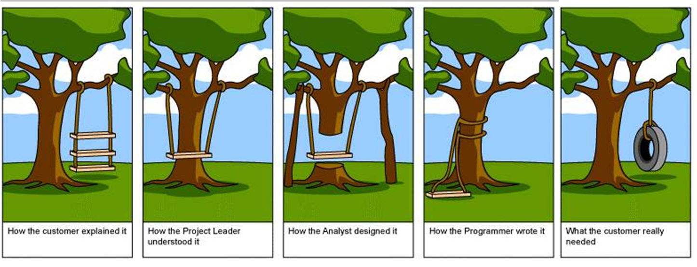
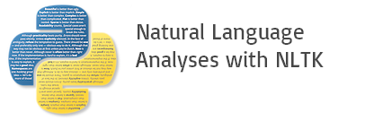

REQT
NLP in requirements elicitation
Created by David, Joe, and Kocsen
Outline
- Introduction
- Problem
- Research
- Building Reqt
- Demo
Introduction
We are all software engineers!
the problem
Requirements elicitation can be time consuming and tedious.
We can use computers to help us!
What if there was a tool that parsed what the customer said and just designed the software?
Research
People have tried this before.
Let's take a look.
Source 1
Army Project in Alabama
Old technologies (~2002)
Source 2 - Verbing the Noun
By the "pragmatic programmers": Thomas & HuntShowed us the basics of getting requirements from NL.
| Part of Speech | Can Relate to... |
|---|---|
| Noun | Entity/Class |
| Verb | Behaviour or Relationship |
| Adjective | Property |
Creating REQT
The name comes from Requirements + Wrecking
Natural language requirements Goes in

JSON Comes out
Very useful and extensible format.Reqt Data Flow
- Natural Language
- NLTK Tokenize
- Gather Nouns
- Gather Verbs
- Excluding Common words by using Hapax legomena
Reqt Usage
usage: driver.py [-h] [-j | -x] infile outfile
$> python3 drive.py sample.txt
{
"behaviors":
["project", "displayed",
"ask", "set", "stated",
"providing", "improved", "related"],
"attributes":
["patient", "part", "transfer",
"production", "ui", "tools",
"roles", "country", "group",
"need", "system", "communication"]
}
DEMO
What's wrong?
- Even with Hapax, need to remove unwanted words.
- Part of speech in NLTK is not perfect.
- The corpus can be too short.
What's next?
- Relate nouns and verbs
- Relate entities (NER?)
- Web site to show versatility of tool
- Use UML or Object Notation to create diagrams